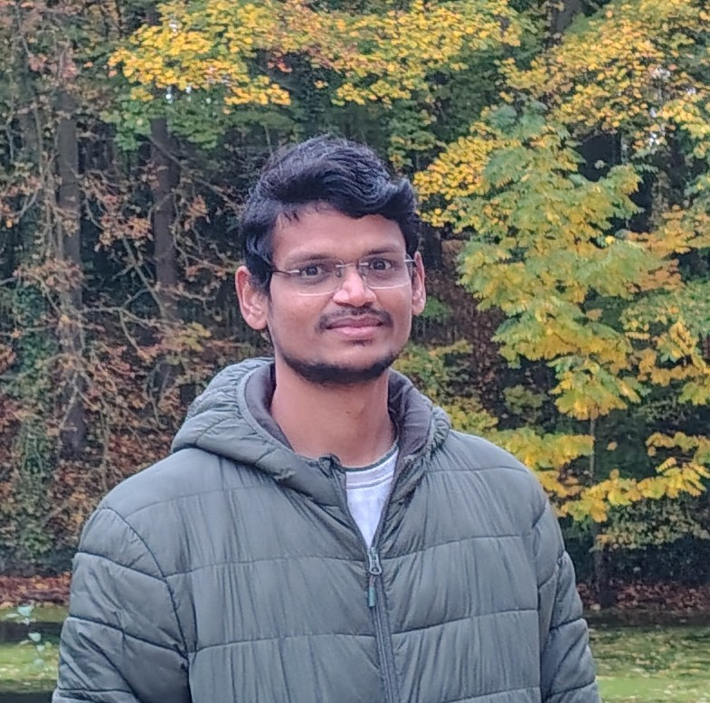

Academic & Research Website
Postdoctoral Researcher
University of Liège, Belgium
Welcome to my academic website. I am a Postdoctoral Researcher at the University of Liège, Belgium. My primary research area is nonlinear vibrations. Here you can explore my research interests, academic profile, and scientific publications.

I am Dhananjay Tandel, a Postdoctoral Researcher at the University of Liège, Belgium.
My primary research area is nonlinear vibrations. My academic interests are focused on understanding the dynamics and behaviour of nonlinear systems.
This website provides an overview of my research interests, scientific publications, and academic activities.
My main research area is nonlinear vibrations. Further details about my specific research topics and ongoing projects will be added here.
Study of nonlinear vibrational behaviour and the dynamics of mechanical systems.
Research into the behaviour and response of nonlinear dynamical systems.
Information about ongoing and completed research projects will be presented here.
For my scientific publications, journal articles, conference papers, and citation information, please visit my Google Scholar profile.
Explore my academic publications and research contributions through my Google Scholar profile.
For details about my academic background, research experience, and professional activities, please consult my Curriculum Vitae.
Dhananjay Tandel
Postdoctoral Researcher
University of Liège, Belgium
For academic discussions and research-related communications, please connect through my academic profile.
Name: Dhananjay Tandel
Position: Postdoctoral Researcher
Institution: University of Liège, Belgium
Google Scholar: Academic Profile